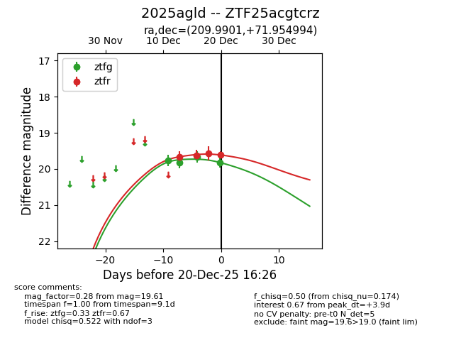
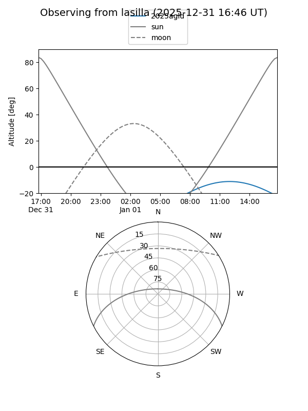
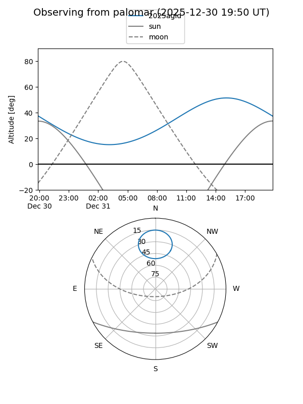
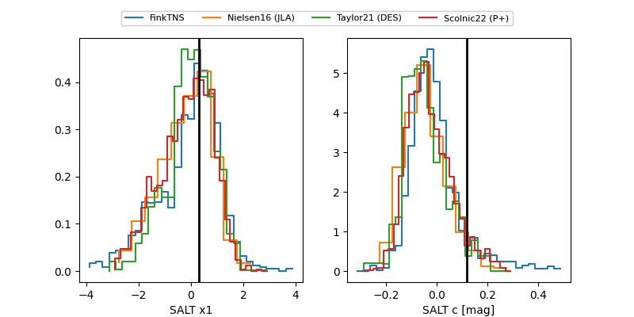

2025agld
Target 2025agld at 2025-12-22 21:26
Aliases and brokers:
FINK: fink-portal.org/ZTF25acgtcrz
Lasair: lasair-ztf.lsst.ac.uk/objects/ZTF25acgtcrz
ALeRCE: alerce.online/object/ZTF25acgtcrz
TNS: wis-tns.org/object/2025agld
YSE: ziggy.ucolick.org/yse/transient_detail/2025agld
alt names
ZTF25acgtcrz (ztf,fink_ztf)
2025agld (tns,yse)
Coordinates:
equatorial (ra, dec) = 209.9901,+71.95499
equatorial (HMS+DMS) = 13:59:57.62,+71:57:17.98
galactic (l, b) = (115.6216,+44.18770)
Flags:
Photometry:
last ztfg=19.78, ztfr=19.48
5 ztfg, 5 ztfr detections
Lightcurve

Visibility


Additional plots
